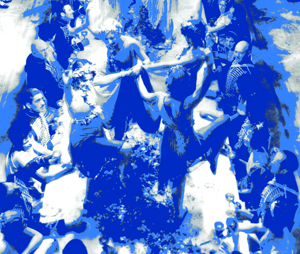
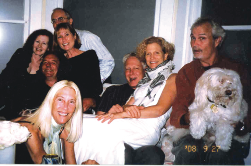

The Venice Progressive Dining Association
55. It may seem like an ordinary number, but to some of us, it's both magical and historic.
Fifty-five has the interesting property that it is the 10th Fibonacci number, the sum of the numbers 1 to 10. It is a heptagonal number, a centered nonagonal number, a triangular number (the sum of the numbers 1 to 10) and a square pyramidal number (the sum of the squares of the integers 1 to 5). It is also a Fibonacci number (the largest Fibonacci number to also be a triangular number) and a Kaprekar number.
Whaaah??
55's also the double-nickel, the dual compliment to my actual favorite number, the best number, the number five, as classified as a Fermat prime. 5 is the third Sophie Germain prime, the first safe prime, and the third Mersenne prime exponent. Five is the first Wilson prime and the third factorial prime, also an alternating factorial. It is an Eisenstein prime with no imaginary part and real part of the form 3n - 1. It is also the only number that is part of more than one pair of twin primes. Five is conjectured to be the only odd untouchable number and if this is the case then five will be the only odd prime number that is not the base of an aliquot tree.
Yeah! So be it! Double yeah!! Double five!!

A friend of my wife Marcia's, Caroline - they're both best friends forever, or B.F.F.'s I suppose - requested that I write a column about a unique organization which recently celebrated it's 55th meeting. And mind you, Caroline's a big mucky-muck at the UN in New York, all right proper ways and what-ho spirit. And to request an article about the on-going Venice Progressive Dining Association's 55th gab-fest and face-fill, was both an honor and a virtuous task.
Back to the beginning of this whole, incredible extravaganza of local eating, drinking, walking, talking, and enjoyment. It all started innocently enough way back in 1988, December 9th to be exact, as a three-part ecumenical dinner among local neighbors along Rialto Avenue. Each couple would serve one course of a "progressive dinner," meaning we'd walk from house to house.
Here's how the Venice Paper told the beginning story of the VPDA, thirteen years later, in Issue six, December 2001:
"Venice Progressive Dining Association.
If the name sounds formal, the meals are not. Four couples in four different homes cook four different courses which collectively make up one meal, then everyone walks from house to house to eat the dinner. Dinners run raucous, fueled by old friendships, better-than-decent wine, and the spontaneity of what goes down on the walk between residences.
When they cooked their first meal in the late 1980's, everyone in the VPDA lived on Rialto Avenue. Th
ey numbered 6 ( 3 couples ) then, one couple short of a dessert course and wound up at Hal's for aperitifs.
In the 13 years since - four meals a year, one per season - their menus have included theme meals and the much anticipated all-guy cooked evening.
Once, when someone "cheated," they nearly split up. A VPDA member ordered Chinese take-out, then tried to make the fake-out fly by presenting in her own dishware. Derision ensued..."
Yes, that was then, but this is now. And in commemoration of our recent 55th get-together, I put out amongst the gustatorial members this rudimentary supposition:
i've been asked to do a venice vanguard article about the progressive dining association. i'm asking you all to help me out by answering 2 questions:
1 - how would you describe our progressive dinners to others?
2 - what are your most memorable moments?
So here, in alphabetical order are the members' responses:
The PDA is a freewheeling, house-to-house gourmet wining and dining experience that allows you to burn off a few calories between courses, revitalizing your appetite. Our Venice neighborhood is one of the most walkable places in L.A. making it ideal for this feast-as-you-go format.
No host knows what the others are preparing, yet it's remarkable how many times the entire dinner comes together as though it was a carefully planned meal with each course complimenting the next.
Our son, Joe, now wants to organize a similar progressive dining group in his college dormitory at San Francisco State University.
The publication of your PDA book was the most memorable experience because it brought together so many great evenings from the past.
- Bob, film and television director
1. Four couples who have known each other for many years periodically arrange to have dinner together. Each household undertakes one course - drinks with appetizers, salad or soup, entrées, and dessert. No one tells the others what they are cooking, yet we have never so far experienced a duplication or disastrous clash of tastes. Mostly we walk from house to house. The result is a hugely enjoyable gourmet dinner made with minimum effort as no one has to prepare more than one course.
2. Outstanding dishes such as Catherine's croquembouche, Jennifer's corn chowder soup, Marsha's chocolate mousse (not to mention her attempts, inevitably successful after some comical failures, to photograph us all in an awkwardly posed group), and some conversations in which every one took a turn to talk about such things as their most embarrassing sexual experience, or their memories of childhood.
- Brian, doctor of literature
1. A group of four couples linked by friendship, love of food, geography, and, at this point, history who convene every few months to walk from house to house, talking and eating and, eventually, sleeping
very well. The tracking of our lives through these culinary occasions produces a rare and singular pleasure in life.
2. Pondering the PDA booklets, red-themed food, the mistake of cooking rabbit and not calling it chicken, every single photograph that Zack and now Marsh takes of us.
- Catherine, museum curator
OK OK - aside from 20 years of fun... and great food... and friendship.
Most memorable moments - Brian and I have many times (most of the time) made things that we haven't experimented with before. I always wonder whether this will be the time that it just doesn't work and no one will eat our course! I love that all the menus just come together and magically complement one another so well without us ever telling each other what we're going to prepare. It's wonderful being in four different environments in an evening with all those beautiful tables and lots of different music. I wouldn't miss Marcia's photo-taking session for anything, especially if she's wearing something low cut! There you have it.
- Jacky, floral designer
1- Description: My favorite people, the best food! Gathering of foodies who live in the neighborhood, who never flake, are always on time and go out of their way to present creative food, interesting wine, imaginative decor & settings not to mention sterling conversation. I can't believe we are members of such a cool group.
Our first progressive, I nearly had a heart attack. You would have thought we were having royalty to dinner I was so worried. I hyperventilated for a month in advance about what to serve, how to present it. After all, this was a gourmet dinner group and one of the members was a professional chef to the "rich and famous" . Pretty intimidating. Well, we haven't been thrown out yet. It is a ton of fun and I love trying out different recipes and ideas on the group.
PD on the beach. I think the sand added a nice texture to the shrimp.
PD playing croquet in Paul & Marcia's back yard.
Thanks to Marcia, we have great pictures of most PD events. I especially love the photos taken in Jacky & Brian's bathtub. I look forward to each gathering. We are so fortunate to have such good friends, through thick and thin. The dinners are something that I always look forward to. Even though the food is extraordinary, it's really the members of the PDA that make it special.
- Jennifer, real estate agent
A quarterly check-in on the lives of three other great families with long histories in Venice, facilitated by great food and libations, unencumbered with DUI's due to walkability
For me, it is the speeded-up movie-like quality of the experience. There is the speed in which children grow up, when you see them but once every 3-4 months. There is the build up of fascinating news and stories amongst twelve intelligent observers of life, that spark great discussion (political, cultural, and personal), interesting reflection, and a bitter-sweet awareness of the passing of time. It is the awareness of our fragile health, our advancing years portrayed through our disappearing earlier generation and our departing next generation, our collective remodels, our career decisions, and the inevitable reports on Venice denizens, that bring context to our collective.
If I had to speak about specific events, they would go at specific dishes, or
maybe specific drinks, or maybe some of the stories told. For what it is
worth.
- Larry, deputy mayor, city of Los Angeles
1) When I describe our progressive dinners... I start by saying that we've been friends for over 20 years and have been lucky enough to live within walking distance of each other. We all love to cook and to eat and we enjoy progressing from house to house for the various courses. The course numbers change from dinner to dinner (with the exception of Catherine and Larry since they moved east of Lincoln and hence require cars to ferry us to and from... so we always start at theirs for hors d'oeuvres), but the format is always pretty much the same... spending about 1 hour at each stop and then walking to the next. It's wonderful having a "walking" neighborhood where this sort of event is possible and I encourage others with friends in this physical proximity to try
it out. Attention to all sorts of details prevail and include more than just the food. There is music to be considered... flower arrangements and occasionally a specific focus like bringing old photos from when we were young... or having the night revolve around a particular geographic spot with the food reflecting this. We are so lucky!!!... and I am so grateful for all these wonderful friends. It's hard to believe we've just completed number 55!
2) Most memorable moments are hard to separate as each dinner is a memory on to itself. Somehow... despite having no a priori knowledge of what anyone else is making... our courses always meld together beautifully. Of course... one particular dinner stands out when Jude (who is no longer living in the area) cheated and got take-out Chinese and semi-passed it off as her own. None of us were pleased :( Another memorable one was right after Michael and Kate Bowe participated and it was literally just days after a fire nearly consumed their cottage home.
For me in particular... I often feel a fool when trying to photographically capture the evening and somehow I always manage to goof up at least the first couple of shots despite trying to prepare the camera. At this point... I think everyone just expects me to make a mess of it :)... but at least we do have photos to document.
There is nothing quite so wonderful a
s being with friends around a table filled with great food and wine. Each dinner is a cherished memory and I hope it continues indefinitely.
- Marcia, private chef
Which leaves me.
First, I don't want to not include other former members, who have progressed onward, outside of our walking Venetian borders. First, there was Kate and Michael, a current brewmeister, as previously mentioned. They were original founding members on Rialto, there from the start. PDA's #1 through #6, which featured the introduction of Michael's home brew. They both seemed to compliment each other so well, but they ultimately moved on to better places. Their company is still sorely missed.
Next, came Jude (enough about her already, sheesh!) and then there was Rick & Debra, great neighbors who matriculated to Santa Monica, after many musical occasions at their cool house on Grand. Jude, a legal secretary/musician, lived on West Washington, before it was Abbot Kinney, in what's now the gypsy shop Zingara. She had a killer laugh, was from Chicago, which meant she was a great musician [naturally], and could party-down with the best of them. Like at PDA # 5, where on a New Year's Eve we partied like it was 1991!
Rick, a music composer, was a college friend of Bob's, and he and Debra, from Louisiana in all it's comforting, slithering means, fit right in for four courses between New Yea
r's 1994 and the spectacular dinner which started PDA #24 at Westminster Beach on May 3rd, 1997. Quite the times! All the women wore dresses - God bless 'em! And finished off in the bathtub, caught by the camera.
My only description to others of how these progressive dinners came about and exist, all go back to my parents. They had similar friends within our community back then, but instead of walking, they'd hire out the old fire truck, y'know, the old hook and ladder model from one of the local fraternities, who'd come and snatch them up from their homes, and they'd have to ride either sitting on the big back hose-bound exterior, whooping hilariously, or ride standing up against the big, brave back of the truck, gripping on for dear life, as they roared along to the next stop. I never got to ride in the back, a child-hood dream, but I'd always wanted to replicate the social interaction and the great, neighborly feeling that they'd experienced.
So that's what I'd say as to why and how this whole progressive thing came about. I was lucky enough to be given the opportunity to recreate this great family history on a new, neighborly level.
However, we take our walking very seriously. As evidenced from the original V.P.D.A. historical compendium's introduction, walking is the backbone on which the Progressive Dining Association is bas
ed. It's the safest, and most legal, method of progressing from course to course. It provides a relaxing journey from location to location, allows the necessary respite between courses to help avail the proper digestive processes, maintains the trail of conversation as the group collective moves along, and enables the participants to get totally sloshed without any negative repercussions. Just lotsa fun.
By definition, it's the manner of progressive walking; the gait; the condition of the ground, path, etc. with reference to its suitability for group walking, i.e. Shell Court in the flood, when not navigable, unless by husbandback.
California Penal Code 10.35.030 states that no pedestrian(s) shall cross a street at other than a crosswalk, or other than by a route at right angles to the curb or by the shortest route to the opposite curb, except in a marked crosswalk. California Vehicle Code 21955 states between adjacent intersections, pedestrians shall not cross the roadway at any place except in a crosswalk. And so we don't.
Knowing the rules and using our experience in realizing what's safe, we proceed. The whole idea of drunk walking, therefore, makes it work for us. Partying! Dining! Neighbors! Walking! Minimizing civilization (automobiles) and maximizing naturalization (walking).
Plus Venice at night. The moon. The usual great weather. Our seaside outdoors!
Let's eat!
As to my favorite course - question #2 - I'll have to resort to the newly-published V.P.D.A. Part 4, an updated historical and photographic compendium, for PDA's #41 - #55. I'll use this guide to be able to go back in time to remember PDA #50, when we all filled-out those Vanity Fair Proust Questionnaires, and my answer was:
PDA #35, haupia with tropical fruit salad and French mango sparkling liqueur. *

So, there you have it, all quite proper and such. Twenty years of great fun. My only hope is that, as Bob & Jenn's son Joe is doing, we can all realize that this institution can be an inspiration to all neighbors, anywhere; that you too can do this. Eat and walk. Drink. Have fun. Enrich yourselves.
With the recent paring-down of things, it's definitely time for us all to take a step further to get to know our neighbors. Because that's what a community is all about. Especially here in the great city of Venice.
- Paul, local historiographer
* Because I made it myself...
|